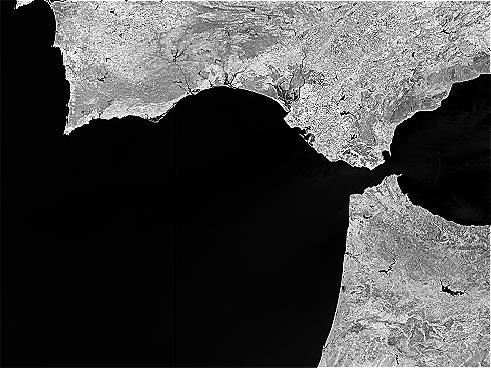

Image Filtering
The operator creates filtered image bands by applying
convolution or non-linear filters to the selected band. Filters are
used to perform common image processing operations e.g. sharpening,
blurring or edge enhancement.
Note:
When storing a product containing a filtered band, the data of the band is not stored with the product.
Only the information how to compute the data is stored. This behaviour is similar to virtual bands.
DAT supports the following filters
- Detect Lines
Horizontal Edges, Vertical Edges, Left Diagonal Edges, Right Diagonal Edges, Compass Edge Detector,
Roberts Cross North-West, Roberts Cross North-East
- Detect Gradients (Emboss)
Sobel North, Sobel South, Sobel West, Sobel East, Sobel North East
- Smooth and Blurr
Arithmetic 3x3 Mean, Arithmetic 4x4 Mean, Arithmetic 5x5 Mean,
Low-Pass 3x3, Low-Pass 5x5
- Sharpen
High-Pass 3x3 #1, High-Pass 3x3 #2, High-Pass 5x5
- Enhance Discontinuities
Laplace 3x3, Laplace 5x5
- Non-Linear Filters
Minimum 3x3, Minimum 5x5, Maximum 3x3, Maximum 5x5, Mean 3x3, Mean 5x5,
Median 3x3, Median 5x5, Standard Deviation 3x3, Standard Deviation 5x5,
Root-Mean-Square 3x3, Root-Mean-Square 5x5
DAT also supports user defined filters
- The operator
also supports user defined convolution filter kernel. The user define
kernel can be browsed and selected from User Defined Kernel file in the
UI.
- The user defined kernel must be saved in ASCII file in a
matrix format. The first line of the file contains two integers to
indicate the dimension (rows and columns) of the matrix. For example, a
user defined 3x3 low-pass filter can be saved in file lop_3_3.txt in the following format:
3 3
1 1 1
1 1 1
1 1 1
Example images

Compass Edge Detector Filter
|

Low-Pass 5x5 Filter
|
| 
High-Pass 3x3 #2 Filter
|

Laplace 3x3
|
DAT also supports user defined filters
- Source Bands: All bands (real or virtual) of the source product. User can
select one or more bands for producing filtered images. If no bands are
selected, then by default all bands are selected.
- Filters: Pre-defined filters.
- User Defined Kernel File: User defined filter kernel file.